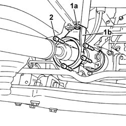
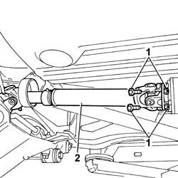

2410A32 FRONT TRANSMISSION SHAFT - R.R.
- Path
- Procedures > 24 TRANSMISSION > 2410 TRANSMISSION SHAFT > 2410A TRANSMISSION SHAFT BETWEEN THE TRANSMISSION AND THE DIFFERENTIAL > 2410A32 FRONT TRANSMISSION SHAFT - R.R.
- Kind
- repair procedure (removal / refitting; the operation number is the code)
- Applies to
- engines: 2.0 16V, 2.8 JTD 8V; all production periods; only with equipment: 4X4
- Interactive page
- https://sloeber94.github.io/elrnDB-fDct/en/#/244001050
Applies to: engines: 2.0 16V, 2.8 JTD 8V; all production periods; only with equipment: 4X4
 Removing
Removing
 Refitting
Refitting- Position the vehicle on the lift.
- Loosen the greaser for the universal joint securing the front propeller shaft to the rear drive idler unit.
1. Undo the fixing bolts (1a) and move the safety bracket (1b) aside.
2. Loosen the bolts fixing the front propeller shaft universal joint to the rear drive idler unit.

Applies to: engines: 2.0 16V, 2.8 JTD 8V; all production periods; only with equipment: 4X4
- Unscrew the grease fitting for the universal joint securing the front propeller shaft to the viscous coupling flange.
1. Unscrew the bots securing the universal joint securing the front propeller shaft to the viscous coupling flange.
2. Remove the front propeller shaft.

Applies to: engines: 2.0 16V, 2.8 JTD 8V; all production periods; only with equipment: 4X4
Refitting
Removing- Fit the propeller shaft safety bracket in place and tighten the fixing bolts.
- Fit the propeller shaft and tighten the bolts securing the front propeller shaft universal joint to the viscous coupling flange.
- Tighten the universal joint grease fitting.
- Tighten the bolts fixing the front propeller shaft universal joint to the rear drive idler unit.
- Tighten the universal joint grease fitting.
- Remove the vehicle from the lift.